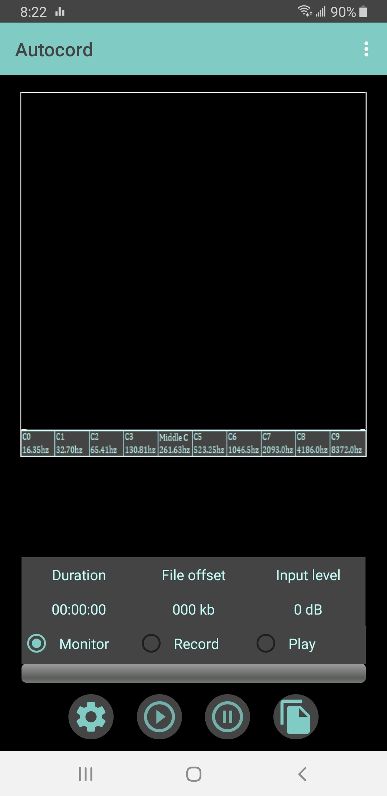
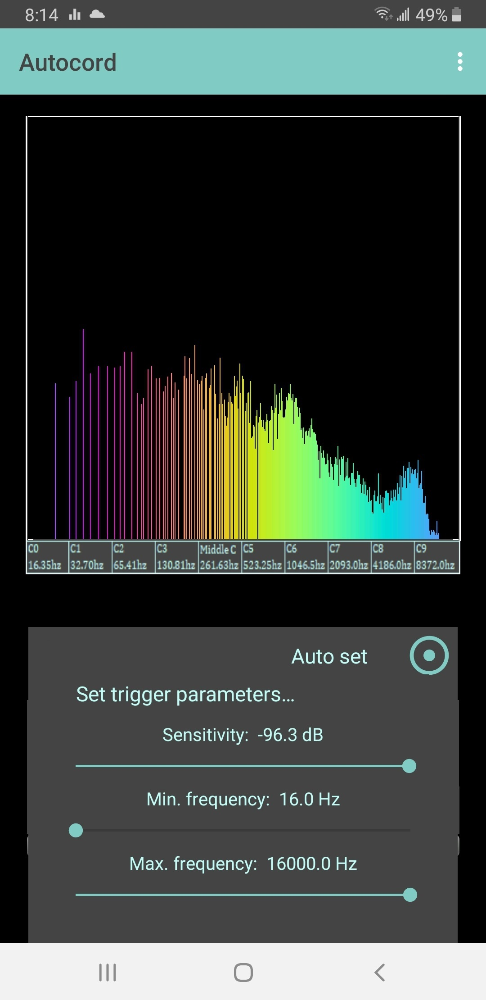

Ajuda do Autocord
Guia Simplificado para Gravação Automática
Visualizando/Reproduzindo Gravações Exportadas
Onde as Gravações Exportadas são Armazenadas
Interface Simplificada versus Interface Avançada
Gravando Conversas Telefônicas
Selecione o modo Gravação. Pressione o botão Iniciar. Fale. Você pode pausar e continuar gravando a qualquer momento. Quando terminar, pressione Parar. Agora selecione o modo Reproduzir. Pressione Iniciar, e você ouvirá sua gravação. Você pode pausar e continuar a reprodução a qualquer momento. Isso é tudo para fazer um memorando de voz rápido. Você pode fechar o aplicativo e, quando retornar, sua gravação sempre estará lá até que você grave outra coisa. Basta selecionar o modo Reproduzir e Iniciar para ouvir sua gravação novamente.
É muito simples configurar o Autocord para disparar a gravação automaticamente... Selecione o modo Monitorar e toque em Iniciar. Você verá o espectro de quaisquer sons presentes no momento exibido. Se você falar, verá a exibição reagir. Considere isso como uma indicação de que tudo está funcionando. Agora toque no ícone de engrenagem e a caixa de diálogo Configurações será exibida. No canto superior direito dessa caixa de diálogo, você verá o ícone para Configuração Automática do disparo. Em um momento de silêncio, toque nesse ícone. Ele ajustará automaticamente a sensibilidade para pouco acima do nível de ruído atual. Depois de um ou dois segundos, toque novamente para parar. Isso define automaticamente o disparador. Se algum ruído inesperado ocorrer durante a operação de Configuração Automática, a linha horizontal que representa a sensibilidade pode subir muito, reduzindo a sensibilidade desnecessariamente. Basta parar a Configuração Automática e, quando estiver quieto novamente, reinicie-a. A linha horizontal se estabilizará logo acima do nível máximo de ruído, significando que, se um som ocorrer acima do nível de ruído, ele acionará a gravação - desde que esse som caia dentro da faixa de frequência padrão e de uso geral que também é configurada. Agora feche a caixa de diálogo Configurações e comece a gravar. Quando você falar, um 'LED' vermelho acenderá no topo da tela e a palavra "Gravando" será exibida em vermelho. Quando você parar de falar, o LED se apagará e a palavra "Gravando" não ficará mais vermelha. É isso. Agora você tem gravação automática.
Se você quiser preservar sua gravação, pressione o botão Exportar/Reproduzir Arquivo de Áudio enquanto estiver no modo GRAVAR ou MONITORAR. A gravação será salva como um arquivo wav mono a 32.000 amostras por segundo, com o nome baseado na data/hora em que foi gravado no formato... aaaammddhhnnss.wav Por exemplo, um arquivo gravado às 11:33:21 em 1º de junho de 2021 terá o nome 20210601113321.wav Você o encontrará na pasta Autocord.
Para listar e reproduzir arquivos de áudio exportados, pressione o botão Exportar/Reproduzir Arquivo de Áudio enquanto estiver no modo REPRODUZIR. Uma caixa de diálogo aparecerá com os nomes dos arquivos traduzidos para um formato amigável de data/hora, por exemplo, 20210601113321.wav será listado como "01 de jun. de 21, 11:33:21". A duração em forma de hh:mm:ss aparecerá ao lado. Basta selecionar o arquivo desejado na lista da caixa de diálogo e pressionar o botão de reprodução. Você poderá buscar qualquer posição no arquivo de áudio com a barra de rastreamento, ou pausar e reproduzir a qualquer momento.
Você pode encontrar seus arquivos exportados com seu aplicativo de Arquivos. Por exemplo, abra o "Meus Arquivos" da Samsung. Em Categorias, selecione "Áudio". Você verá a pasta "Autocord". Abra a pasta e você pode reproduzir, compartilhar ou excluir gravações. No Gerenciador de Arquivos, você verá os arquivos listados em "Autocord". Infelizmente, os players do Google ou Samsung e muitos outros baseados na mesma API do Google não reproduzirão nenhum desses arquivos se tiverem mais de 30 segundos de duração. Por razões desconhecidas, a API do Google empregada nesses players optou por não suportar os formatos de arquivo PCM mais básicos. Se você copiá-los para o seu PC, no entanto, descobrirá que quase qualquer aplicativo os reproduzirá. Para análises sérias, o editor de áudio gratuito e de código aberto Audacity é recomendado.
Sempre que você inicia uma nova gravação, a anterior é sobrescrita. Se você deixou uma gravação muito longa que não lhe interessa mais, basta gravar algo muito breve sobre ela para liberar o espaço que ocupava. Para excluir gravações exportadas, você precisa usar o aplicativo Arquivos para encontrá-las e excluí-las, assim como seus logs.
O funcionamento do Autocord requer apenas alguns elementos da interface do usuário. A imagem abaixo mostra a interface simplificada que o usuário vê ao abrir o aplicativo pela primeira vez...

Há três modos de operação: Modo Monitorar, Modo Gravar e Modo Reproduzir, selecionados por um toque em um dos botões de rádio. Assim que você tocar no ícone Iniciar, o nome do modo atual em que você está será exibido sobre os botões de rádio. Quando você parar, poderá selecionar um modo diferente. A qualquer momento no Modo Monitorar ou Modo Gravar, você tem acesso à caixa de diálogo Configurações através do ícone de engrenagem, mas no Modo Reproduzir, esse ícone é substituído pelo ícone "info". Quando você tocar nele, receberá uma abundância de informações sobre a gravação atual. Da mesma forma, a qualquer momento, quando parado no Modo Monitorar ou Modo Gravar, você pode salvar/exportar a gravação atual através do ícone "arquivos" (ícone Exportar/Reproduzir arquivo de áudio), mas no Modo Reproduzir, esse ícone dá acesso a arquivos já exportados para que você possa reproduzi-los. Há três valores exibidos acima da linha de botões de rádio. Durante a gravação, a duração da gravação e seu tamanho de arquivo são exibidos e constantemente atualizados. Durante a reprodução, em vez de duração, o tempo gravado é exibido, juntamente com o deslocamento do arquivo. Isso é constantemente atualizado de acordo com o que você está ouvindo. Mais uma informação também é exibida: "Ganho Aplicado". Durante a reprodução, o Autocord "normaliza" cada grupo contíguo de amostras acionadas para maximizar o nível de som. Se uma grande quantidade de ganho foi aplicada, você sabe que o som capturado naquele momento era de baixo volume, e se uma pequena quantidade de ganho foi aplicada, o som original era alto. Com os ajustes constantes de ganho, todos saem no mesmo nível de volume, exceto um som fraco que terá uma relação sinal-ruído pior em comparação a um som que era originalmente alto.
Você não precisa ser um especialista em tecnologia para usar este aplicativo. Quando você abre o aplicativo pela primeira vez, é apresentado à Interface Simplificada, que mostra menos itens na tela para que você não se sinta sobrecarregado com a complexidade. Se você quiser ver o que está perdendo, vá para o menu Opções através dos 3 pontinhos no canto superior direito e escolha "Interface Avançada". Isso adiciona a exibição de Frequência de Pico, dB de Pico e Valor de Nota, coisas que você realmente não precisa se não estiver muito interessado em tecnologia.
Além da opção mencionada acima para escolher a Interface Simplificada ou Avançada, há mais duas opções disponíveis: Filtro de Entrada e Impulso de Entrada. Ambas são selecionadas por padrão. O filtro de entrada remove subsônicos e frequências muito baixas abaixo da faixa da voz masculina que só servem para tornar o som turvo. Esses sons são produzidos por fontes como máquinas, equipamentos elétricos e motores de automóveis. O corte é definido para 90 Hz. A única vez que você não gostaria disso é se estiver gravando música. O Autocord é otimizado para capturar sons distantes. O impulso de entrada ajuda a amplificar sons de nível muito baixo e melhora a eficácia do filtro de entrada. Ele fornece um aumento de cerca de 8 dB no estágio de entrada, antes de processamento e amplificação adicionais. Recomenda-se desativar o Impulso de Entrada se você normalmente fala diretamente no telefone ao gravar, caso em que não há necessidade de ganho extra e pode até causar um pouco de distorção nos picos.
Selecione o modo Monitorar e pressione Reproduzir. Se você falar ou assobiar, verá o espectro do som que você faz. Fique em silêncio por um momento e verá o nível máximo do ruído ambiente. As frequências do espectro variam de 16 Hz a 16.000 Hz, divididas em 10 oitavas, indo da oitava 0 à esquerda até a oitava 9 à direita. Estas são as mesmas oitavas que você encontrará em um piano, exceto que um piano não tem uma faixa tão grande, estendendo-se apenas da oitava 1 à oitava 7. Dividir um espectro em oitavas dá ao visualizador um referencial. Amplie a legenda abaixo do display em uma das capturas de tela aqui. Se você olhar de perto um pouco à esquerda do centro, verá o rótulo "Dó Central", que é a oitava 4. Esta oitava se estende da nota Dó4 a Si4, ou em termos de frequências, de cerca de 261,63 Hz a 493,88 Hz. Você também verá a frequência que todas as outras oitavas começam. Cada oitava é conceitualmente dividida em 48 bandas. Quando um som é processado, o pico mais alto em cada uma dessas bandas forma uma linha vertical do gráfico. Sua altura mostra a magnitude desse pico - se de fato um pico foi encontrado naquela banda. Você notará que quanto menor a oitava, mais lacunas serão vistas na exibição, pois nenhum pico foi encontrado em várias bandas. A frequência fundamental da voz masculina é tipicamente em torno de 100 Hz a 120 Hz, enquanto a fundamental da voz feminina varia de 165 Hz a 255 Hz. Não é tão simples assim, no entanto. A maioria dos sons na natureza gera uma gama de frequências de uma vez, começando em algum valor fundamental e subindo pelo espectro. Então, quando vemos o espectro de um homem falando em comparação com o espectro de uma mulher falando, veremos uma sobreposição considerável. Além disso, a maior parte da energia pode estar bem acima do fundamental. Por exemplo, um homem dizendo "olá" pode produzir o pico mais alto em torno de 488 Hz. Tudo depende das sílabas que estão sendo faladas. Enquanto isso, muitos cantos de pássaros têm faixas de frequência entre 1.000 Hz e 8.000 Hz. Você pode brincar com diferentes sons para ver seu espectro - sempre sobreposto ao nível de ruído ambiente. Com a Interface Avançada (selecionada no Menu de Opções), você verá a frequência de pico e seu nível em dB. Se isso coincidir com uma nota musical, você também verá seu valor de nota musical.
"dB" é a abreviação de "decibel", que é uma medida do nível de som. Usamos a escala de decibéis em vez de exibir o valor da amplitude porque ela se conforma a como os humanos interpretam a intensidade. Nossos ouvidos são mais sensíveis a sons baixos do que a sons altos. Nossa sensibilidade auditiva é logarítmica e a escala de decibéis também é logarítmica para combinar. Um decibel é a menor mudança de volume que podemos perceber em um ambiente de laboratório, embora normalmente seja necessária uma mudança de 3 dB antes que todos concordemos que houve uma mudança no volume de alguma fonte de som no mundo real. Se a amplitude de algum tom for reduzida pela metade, nossos ouvidos interpretam isso como uma queda de apenas 6 dB. O Autocord lida com termos de dB relativos, pois requer equipamentos especializados para determinar o nível de som absoluto. Para o Autocord, um som em amplitude total é arbitrariamente rotulado como "0 dB", e qualquer coisa abaixo disso necessariamente deve ser negativa. Para o Autocord, -96 dB é silêncio perfeito, então o nível de qualquer som capturado pelo Autocord varia de -96 dB a 0 dB. Se você vir o ruído atingindo cerca de -50 dB, algum som específico embutido nesse ruído a -70 dB será dificilmente discernível, dependendo de sua frequência em relação ao ruído, é claro. Então, normalmente, não queremos configurar o disparador para menos de 20 dB abaixo do nível máximo de ruído.
Este aplicativo é todo sobre gravação acionada, e o motivo pelo qual é chamado de "Autocord" - para "Gravação Automática". A captura de áudio pode ser acionada não apenas pela magnitude do sinal, mas também apenas se cair dentro de uma faixa de frequência desejada. Assim, ele pode até identificar um som de interesse abaixo do nível de ruído ambiente. Clique no botão Configurações (o ícone de engrenagem) e você verá a tela de configurações conforme mostrado aqui...

No Modo Monitorar, toque no botão Auto Set em um momento de silêncio e você verá uma linha horizontal sendo desenhada no display espectral logo acima dos picos mais altos, marcando o limiar de sensibilidade, e linhas verticais marcando a frequência mínima e máxima no display espectral. Apenas os sons que caírem dentro da faixa de frequência configurada podem acionar a gravação, e somente se esse som exceder o limiar de sensibilidade marcado pela linha horizontal, que é automaticamente configurado para estar 3 dB acima do pico do ruído. A faixa de frequência será configurada de cerca de 90 Hz a cerca de 8000 Hz, uma boa faixa de propósito geral que capturará a maioria dos sons de interesse, como a voz humana, mas você pode ajustá-la conforme desejar. Durante a operação Auto Set, você pode notar a linha horizontal representando a sensibilidade saltar um pouco quando um pico mais alto passa. Se algum som alto inesperado ocorrer, pode elevar muito a linha de sensibilidade. Basta parar a operação Auto Set e tocar em Auto Set novamente para reiniciá-la. Depois de um ou dois segundos, pare Auto Set para congelar a configuração. Você pode, é claro, ajustar a faixa de frequência de acordo com sua preferência. Se você estiver ditando para o telefone na mesa ao seu lado, estreite a faixa de frequência para corresponder à sua voz conforme observado no display espectral e deslize a linha de sensibilidade mais para cima para que não acione com todos os pequenos sons que você faz ao digitar ou mexer os pés. Para outro exemplo, para capturar cantos de pássaros, configure uma faixa de frequência de talvez 3000 Hz a 5000 Hz e toque no botão Auto Set novamente. Desta vez, você provavelmente verá o nível de ruído muito mais baixo nessa faixa de frequências. No entanto, você provavelmente não deseja a sensibilidade abaixo de cerca de -69 dB, para capturar sons que são realmente audíveis em meio ao ruído de fundo. Claro, tudo depende do nível de ruído onde você está. Observe isso antes de abrir a caixa de diálogo Configurações para uma orientação, depois certifique-se de não configurar a sensibilidade para mais de 20 dB abaixo do nível máximo de ruído ambiente do espectro completo. Para fechar a caixa de diálogo Configurações, clique no 'X' no canto superior esquerdo, toque no botão Voltar do telefone ou simplesmente toque na tela fora da caixa de diálogo Configurações. Agora configure o aplicativo no Modo Gravar e pressione Iniciar quando estiver pronto. A palavra "Gravando" será exibida. Quando um som ocorrer que acione a gravação, essa palavra ficará vermelha durante o evento de acionamento, e você também verá um 'LED' vermelho no topo do display. Quando o nível de som cair abaixo do limiar de acionamento, o LED se apagará e a palavra "Gravando" não ficará mais vermelha. Durante a gravação, você verá apenas a parte do espectro que você selecionou para acionar, mas pode ter certeza de que está capturando o espectro completo do som captado pelo microfone. Durante a reprodução, você verá o espectro completo como foi capturado. Experimente um pouco com este acionamento e você o entenderá rapidamente. Não é tão complicado quanto parece, com a exibição visual dos disparadores para guiá-lo.
Se o aplicativo estiver configurado para gravar e o telefone tocar, ele pausará automaticamente. Atenda a chamada e navegue de volta ao Autocord e despausa para capturar a conversa. A única ressalva aqui é que, se você estiver usando o viva-voz, não capturará muito bem o seu lado da conversa devido ao cancelamento de eco feito pelo telefone. Se você estiver usando fones de ouvido ou fones de ouvido, sem problemas! Se você ainda não estiver no modo de gravação, peça um momento enquanto navega até o aplicativo e o configura para gravar. A propósito, o Android pausará e despausará brevemente a si mesmo a qualquer momento durante a Reprodução ou Gravação quando notificações soarem no telefone.
Durante a gravação, um log de eventos de acionamento é mantido. O tempo, deslocamento de amostra, frequência de pico e magnitude de cada evento são registrados individualmente. Quando você exporta o arquivo de áudio, encontrará o log de eventos na mesma pasta que o áudio, com o mesmo nome, exceto que a extensão será ".txt". O log de eventos começará com um cabeçalho mostrando a data/hora de início da captura, quais foram as frequências de disparo e a sensibilidade de disparo configuradas, o número total de amostras gravadas e a duração do arquivo em horas, minutos e segundos. Depois, se você abrir seu arquivo de áudio em um editor de áudio, poderá localizar cada evento. Claro, lembre-se de que os eventos estarão intercalados com os blocos de amostras gravadas antes e depois dos eventos que dão continuidade a cada som capturado. Tipicamente, um grupo de amostras contíguas começará com o áudio de meio segundo antes dos eventos (16 K amostras), seguido por alguns eventos, que, por sua vez, serão seguidos por meio segundo de áudio após os eventos (mais 16 K amostras). Os próprios eventos podem estar intercalados com "não-eventos" (até 3 blocos de 4 K amostras cada), um "não-evento" sendo áudio que ficou abaixo do limiar de acionamento ou fora da faixa de frequência.
Está se tornando um hobby para alguns que gostam de deixar o Autocord funcionando a noite toda ou de deixá-lo capturando por horas em algum local apenas para ver quais sons capturam. Para alguns desses sons, torna-se um pouco um mistério determinar o que os criou. A questão sobre gravação acionada é que, se tudo correr bem, no final de várias horas, você terá apenas alguns minutos de sons interessantes. Se você estiver em um ambiente muito barulhento, pode achar que o nível de ruído é tão alto que você precisa configurar a sensibilidade acima de -50 dB, mas então não será sensível o suficiente para capturar sons à distância. Então tente aumentar o limiar de frequência mínima. Tipicamente, quanto mais você aumenta isso, menor será o nível de ruído que você observará. Você ainda acionará eventos interessantes e até vozes se aumentar isso para 250 Hz ou mais, porque lembre-se, a maioria dos sons é de banda larga. Aumentar o limiar de frequência mínima permitirá que você ignore muitos sons que surgem do "rugido da cidade". Claro, se você estiver apenas gravando a si mesmo ocasionalmente falando diretamente no telefone, o nível de ruído pouco importa, pois sua voz facilmente o sobreporá para acionar a gravação quando você falar. Uma última nota sobre gravação acionada... Você pode configurá-la exatamente e deixá-la funcionando a noite toda se desejar, mas tome cuidado com alguma fonte inesperada de ruído contínuo que pode arruinar tudo para você. Por exemplo, um motor, ventilador ou ar condicionado imprevisto ligando-se e permanecendo ligado algum tempo após configurar o disparador. Ou, para um telefone exposto ao ar livre, o vento aumentando e fazendo barulho ao passar pelo telefone ou o som da chuva. Se alguma dessas coisas ocorrer, o ruído pode acionar a gravação permanentemente durante a duração, que pode ser a noite toda se é isso que você está tentando fazer.